locaties
Op veel verschillende locaties in Amsterdam zijn er watertappunten waar je onbeperkt water kan drinken of flesjes kunt vullen.


Op veel verschillende locaties in Amsterdam zijn er watertappunten waar je onbeperkt water kan drinken of flesjes kunt vullen.
Door je flesje te hervullen, verminder je de vraag naar nieuwe plastic flesjes. Dit helpt de hoeveelheid plastic afval in het milieu te verminderen.
Bij tap je water geven wij niet alleen om de water besparing maar ook om de eerste levensbehoefte van de mens. Door watertappunten te plaatsen door de hele stad hebben wij ervoor gezorgd dat water toegankelijk is voor iedereen. Op meer dan 500 locaties in Amsterdam kun je bij de watertappunten gratis drinkwater tappen op straat.